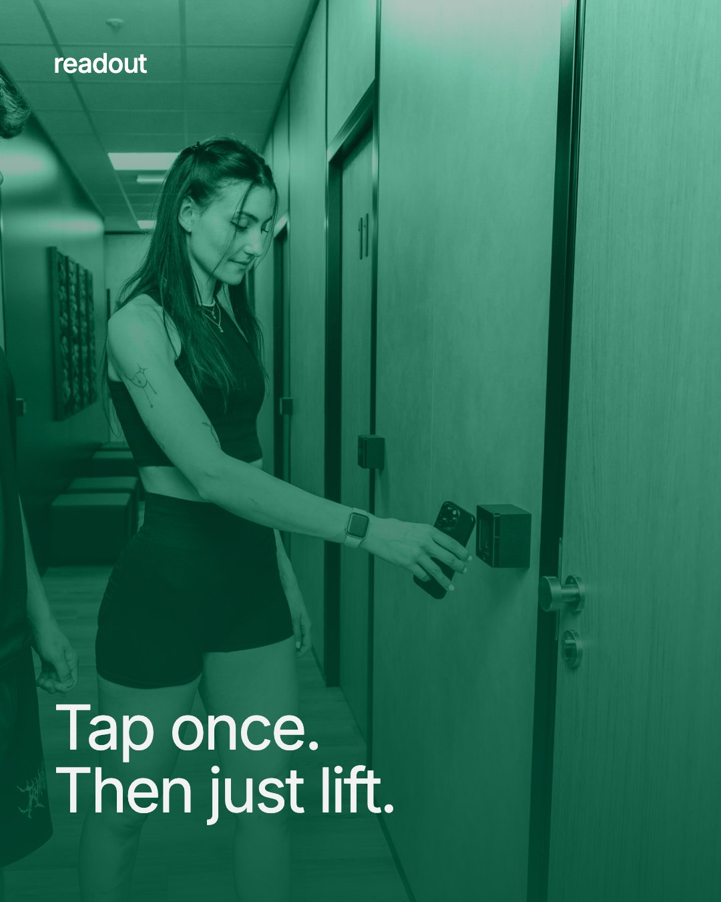
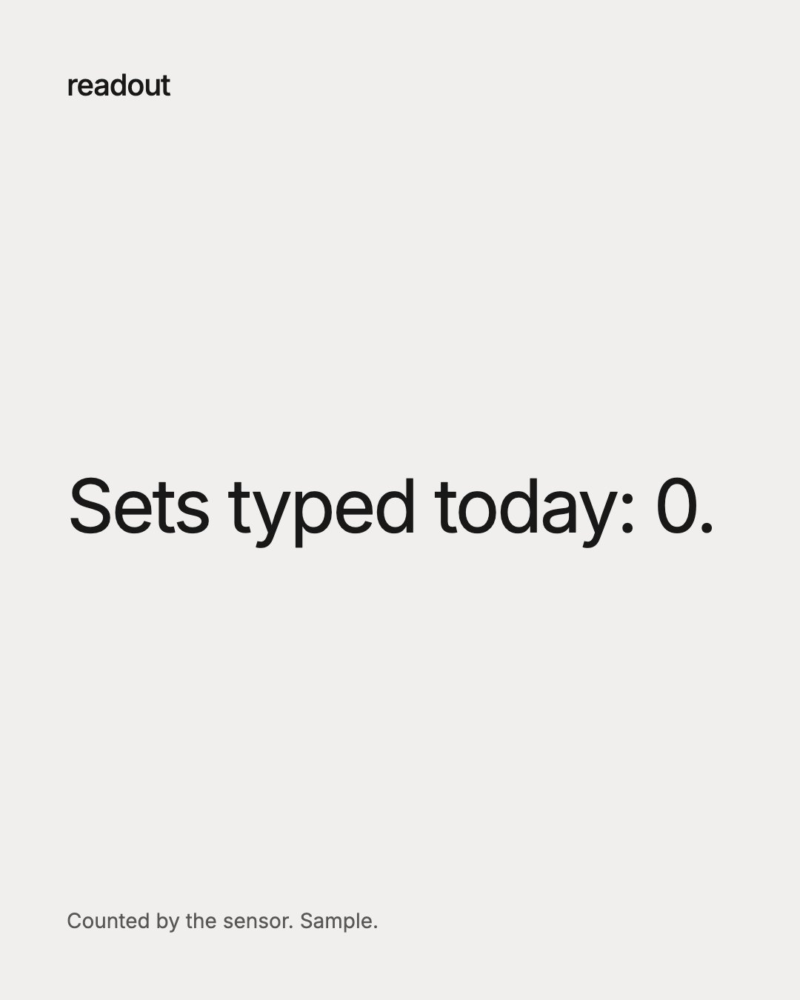
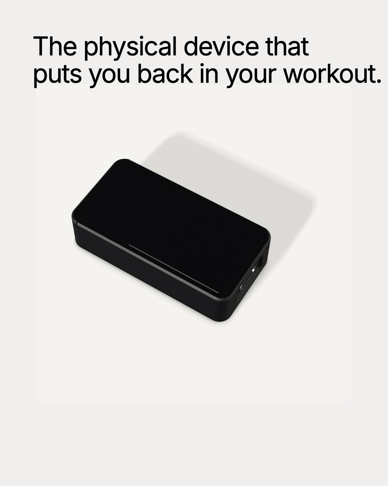
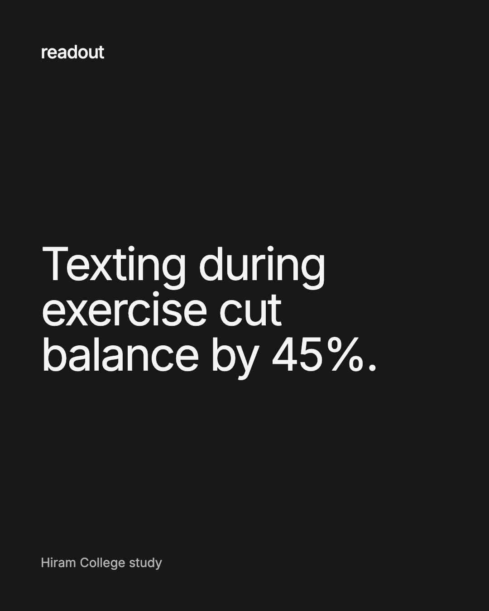
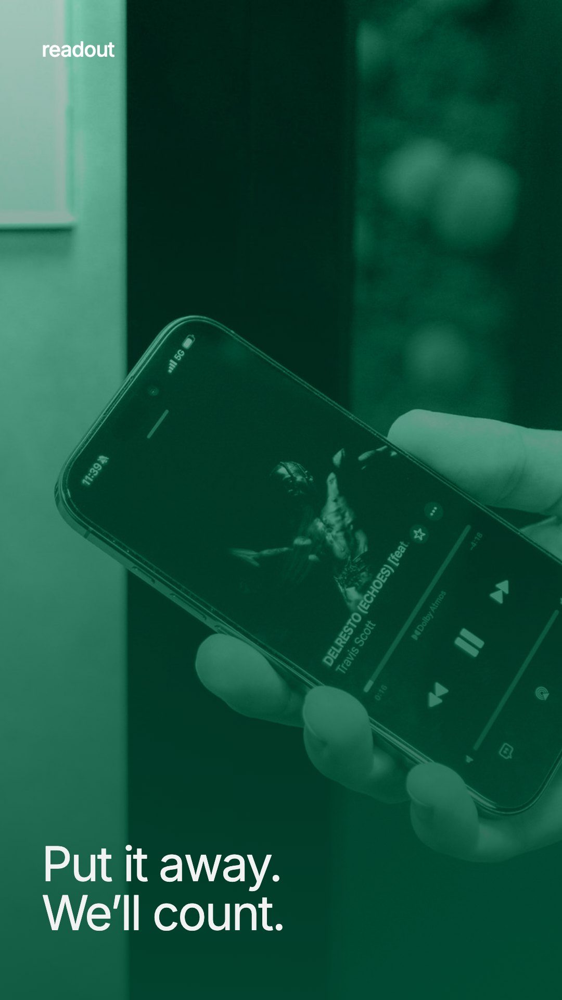
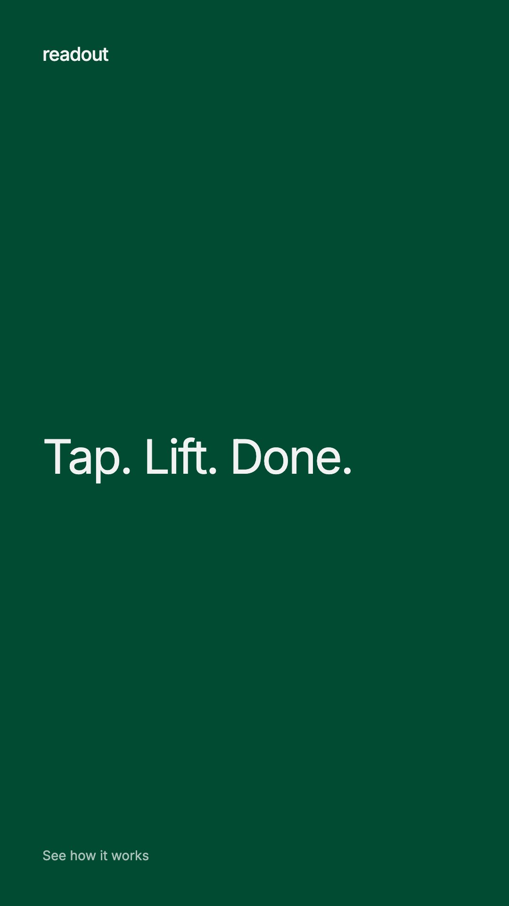

Direction 4, copied from Brick
Nothing to log.
Tap your phone once. Then lift, and let the phone stay in the bag.
Round one: copied as close as possible from Brick, its website, its app, its e-mails and its feed, with our sensor and story swapped in. The skills and our own version come next.
The story
A workout today is half lifting and half typing: find the exercise, enter 10, enter 80 kg, start the timer. Brick sold people a small object that takes their phone away. readout is a small object that takes the logging away. Tap once at the machine, then lift.
The enemyThe phone between every set.
The promiseNothing to type, nothing to start, nothing to log.
The brand kit
Forest#014B33
Ink#181818
Blue#1654FD
Warm grey#F0EFEE
Stone#685D58
White#FFFFFF
Type: Brick uses TWK Lausanne for everything. Stand-in here: Inter, regular weight, set large and tight. Photography: real people looking up, not at a phone, in black and white over the forest green. Voice: short, calm, practical. “Tap once. Then just lift.”


Posts and stories





